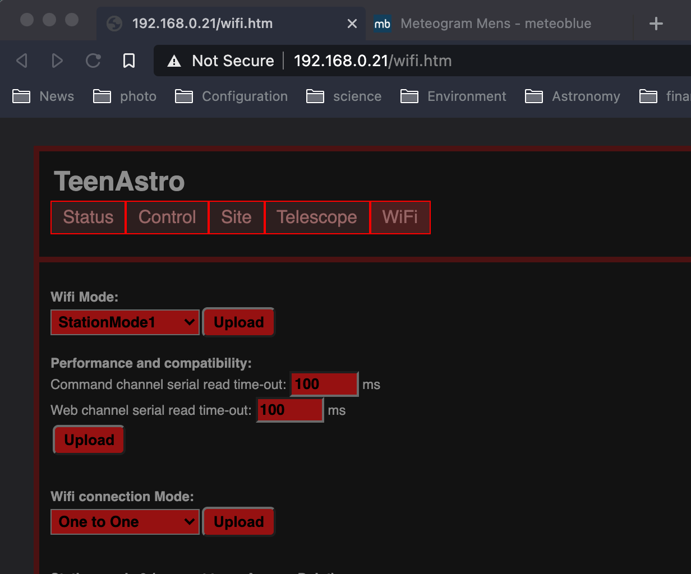

Troubleshooting
This section describes common problems and how to fix them.
Mount goes in the wrong direction
Check that RA and DEC cables are connected correctly, change the direction of either axis in the SHC "Mount" menu.
In general, set the mount to its Home position (using the clutches) before switching it on.
Make sure the pier side reported by TeenAstro corresponds to the actual mount position. If not, it can be changed through the SHC menu, and synchronize to an object afterwards.
High-pitched noise from motors
Either the mount movement is blocked, or your slewing speed is too high for the motor / voltage combination
Mount goes into altitude error when it should not
Check your site latitude and longitude.
Mount stops tracking
Check altitude / meridian limits (icons on SHC)
Connecting to the Main Unit through telnet or serial port
To diagnose communication problems, especially with astronomy software running on a PC, it is convenient to connect to the main unit via telnet:
telnet <IP address> 9999
or via the serial port / USB:
cu -p /dev/ttyACM0
You can retrieve the IP address of TeenAstro on the SHC menu.
Once connected, you can issue any LX200 command and view the result. For example, the standard command :GR# returns the current Right Ascension.
telnet 192.168.0.12 9999
Trying 192.168.0.12...
Connected to 192.168.0.12.
Escape character is '^]'.
:GR#
16:14:05#
When connecting via telnet, the Wifi connection mode must be set to "One to One" (SHC Wifi menu).

Check the list of commands supported by TeenAstro at this address